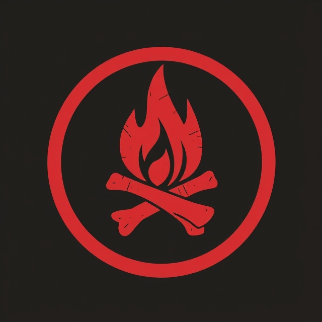

The Fallen
Ancient Beings of Sin
Malachi the Radiant Star

Malachi was once a devoted servant of Eramé, the goddess of creation, renowned for shaping the world and inspiring awe among mortals. With pale skin and silver hair, he had an ethereal beauty. Under her guidance, he crafted magnificent landscapes, but pride soon clouded his judgment. Believing he could rival her power, he challenged her authority and claimed his contributions were equal. Ignoring her warnings, Malachi rejected her wisdom and was cast down from the Celestial Realm. Now, as ruler of the Regal Reaches, his domain reflects his ambition, filled with grand structures of his former glory. After his fall, yellow horns and delicate, insect-like wings adorned him. Though his charm attracts followers, his actions are driven by an insatiable need for validation as he seeks to reclaim the respect lost in the eyes of the goddess he betrayed.
Sinbound Weapon

Imperius
Cult of the Sun
A cult that worships Malachi, the Fallen of pride, believing that those who possess the greatest qualities—intelligence, strength, beauty—are destined to rule over others. They believe in the inherent superiority of the chosen and seek to establish a hierarchy that elevates them above the common folk, viewing themselves as divinely ordained leaders.
Istar the Soul Breaker

Ishtar was once a devoted servant of Garrick, the god of travels and journeys, celebrated for her ability to inspire mortals to seek adventure and embrace their wanderlust. However, the spark of inspiration she ignited soon morphed into a seductive force, leading her to embrace desire and ultimately transforming her into the embodiment of lust. After her fall, she became the ruler of the Province of Passion, where every glance and whisper evokes longing. Now adorned with scaled wings tipped with claws and pink horns that crown her head, Ishtar’s presence is an irresistible invitation to indulge in pleasure. Her shimmering pink garments enhance her allure, and her laughter fills the air like a siren’s call, ensnaring the hearts of those who hear it and guiding them to explore their own desires. While she revels in her seductive power, echoes of her past remind her of the innocent inspiration she once provided before succumbing to the intoxicating allure of lust.
Sinbound Weapon
Calytrix
Cult of the Heart
This group worships Ishtar, the Fallen of lust, and teaches that true enlightenment comes through the pursuit and surrender to desire. They believe that by indulging in every form of pleasure—sexual, emotional, and material—they can transcend earthly constraints and achieve divine unity with the Fallen.
Lucius the Rage Sovereign
Once a fierce and loyal servant of Kothar, the god of destruction, Lucius was a living force of wrath, channeling his master’s relentless power to obliterate chaos and shape the world through sheer might. However, he became consumed by his own fury, allowing rage to eclipse his discipline until it transformed him into the embodiment of unbridled wrath. With his fall, he became a terrifying figure—a being of primal rage ruling over the Anger Archipelago, a shattered domain of volcanic isles and storm-lashed coasts. Now adorned with massive, blood-red wings that stretch like those of a dragon, Lucius towers over his realm, embodying a relentless storm of hatred and vengeance. His crimson horns curl outward in twisting S-shapes, symbolizing the consuming fury that defines his every thought and action. His voice booms like thunder, igniting tempers and driving mortals and fiends alike to violent frenzy. Lucius no longer lives by the purpose he once knew; instead, he is driven by an insatiable lust for battle and destruction, taking twisted pleasure in the rage of others.
Sinbound Weapon
Havoc and Fury
Cult of the Flame

A violent and vengeful cult that follows Lucius, the Fallen of wrath. They believe that anger is a righteous force, capable of purging corruption and bringing about justice. To them, vengeance is sacred, and they view those who wrong them as deserving of brutal retribution, often using violence to settle all matters of honor and pride.
Seraphina the Emerald Whisper

Once a devoted servant of Kalara, the goddess of time, Seraphina was celebrated for her ability to weave the threads of fate, guiding mortals through the delicate fabric of existence. However, in her pursuit of perfection and desire for what others possessed, she succumbed to corruption, transforming into the embodiment of envy. Now, she reigns as one of the co-rulers of the Covetous Coves, a treacherous realm where longing and desire manifest in chaotic waves. Seraphina’s striking appearance reflects her twisted nature; her bird-like wings shimmer in shades of green, reminiscent of a dark forest. Horns adorned with a similar hue protrude from her temples, serving as a constant reminder of the jealousy that courses through her veins. With a voice as smooth as silk but laced with bitterness, she whispers insidious thoughts to those who cross her path, feeding their discontent and sowing seeds of rivalry. Driven by a relentless hunger for what she cannot have, Seraphina thrives in the shadows of others’ accomplishments, her heart a tempest of envy that fuels her ambitions and desires.
Sinbound Weapon

Serakar
Cult of the Serpent

Worshiping Seraphina, the Fallen of envy, this cult believes that only by destroying what others cherish can one find true fulfillment. They teach that jealousy is a divine gift, allowing them to tear down those they covet and gain power through the ruin of others. Their practices often involve deception, betrayal, and sabotage.
Ravenna the Dark Collector
Once a loyal servant of Balorin, the god of balance, Ravenna was tasked with maintaining harmony among mortals and ensuring commerce flourished. However, her devotion twisted into an insatiable hunger for wealth and power, transforming her into the embodiment of greed. Now, she co-rules the Covetous Coves alongside Seraphina, presiding over a realm where the desire for wealth drives its inhabitants to desperate measures. Ravenna’s appearance is both alluring and unsettling; her skin glimmers with a golden sheen, and her long hair cascades like liquid gold. Towering above others, she has large, twisted horns spiraling from her head, a stark reminder of her fall. Her expansive orangey-gold wings are adorned with ornate intricacies. Ravenna's sharp eyes gleam with fervor, betraying her ambition. She speaks with a silken voice, honeyed yet steeped in avarice, enticing others into her schemes while weaving webs of deception. Driven by an unquenchable desire for wealth and control, her heart is a cavern of greed that consumes all who cross her path.
Sinbound Weapon
Obelus
Cult of the Coin

This group reveres Ravenna, the Fallen of greed, and believes that accumulating wealth, power, and possessions is the ultimate form of spiritual enlightenment. They view the pursuit of material gain as a sacred duty, seeking to control the flow of wealth and resources to shape the world according to their desires.
Morrigan the Languid Corruptor

Once a devoted servant of Morvath, the god of dreams, Morrigan was tasked with overseeing nightmares, ensuring mortals faced their fears to learn and grow. However, her growing apathy led her to neglect her duties, allowing dark dreams to spiral into chaos and wreak havoc on unsuspecting minds. This failure transformed her into the embodiment of sloth. Now, she co-rules the Indolent Isles alongside Azulon, where lethargy reigns and ambition is a distant memory. Morrigan has large horns that curve backward, symbolizing her fall from grace, and her solid pale blue-gray wings embody the very nightmares she once managed. Her presence is both calming and unsettling, often lulling those nearby into a stupor with her soft, languid voice. Morrigan's heavy-lidded eyes reveal a longing for the vibrant life she once cherished. She now drifts through her realm, a reminder of unfulfilled dreams and lost ambitions, embodying the weight of apathy that ensnares all who enter.
Sinbound Weapon

Somnus
Cult of the Moon
Followers of Morrigan, the Fallen of sloth, they believe that true peace and enlightenment come not through action but in complete detachment from ambition and worldly pursuits. They advocate for a life of quiet contemplation, rejecting the struggles and demands of society, and believe that inaction is a form of purity.
Azulon the Insatiable Tempest

Once a devoted servant of Illyandra, the goddess of secrets and shadows, Azulon was tasked with safeguarding hidden truths and whispered mysteries. However, his insatiable curiosity twisted into a gluttonous obsession with consuming others' secrets, corrupting his purpose and transforming him into the embodiment of gluttony. Now, he co-rules the Indolent Isles alongside Morrigan, where secrets serve as currency, drawing in those seeking refuge from the truth.Azulon’s appearance reflects his nature; he is tall and imposing, with twisted horns spiraling from his head and deep purple skin that marks him as a creature of shadows. His wings, with their purplish hue, unfurl majestically, embodying the very secrets he craves. His presence is both alluring and unsettling, ensnaring unsuspecting souls with promises of revelation. Azulon's piercing eyes gleam with a hunger for knowledge, forever searching for the next secret to devour. Now, as he wanders the Indolent Isles, he serves as a reminder of the dangers of unchecked desire, trapped in the shadows of his own making.
Sinbound Weapon

Vorago
Cult of the Void
This cult worships Azulon, the Fallen of gluttony, and believes that consumption is the path to transcendence. They see no limit to their needs, whether in food, drink, or indulgence, and believe that by continuously consuming, they can achieve immortality and divine favor, finding spiritual fulfillment in endless excess.